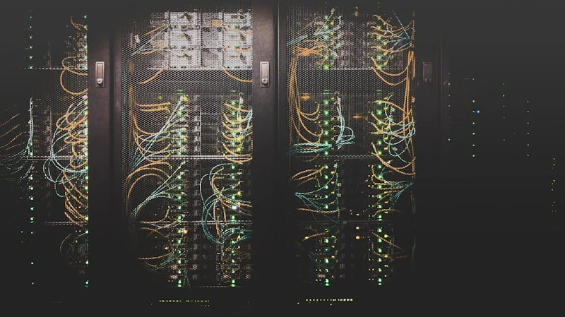
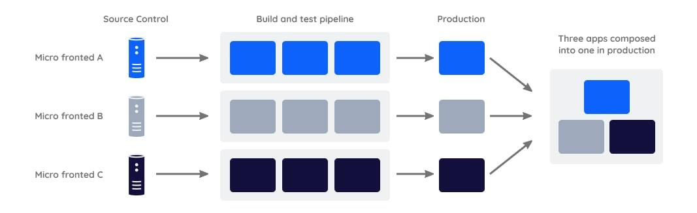

About the company
Based in Palo Alto, California, Turing is a fully remote company of 500+ people that connects top global talent with leading tech companies. Through Turing, I was placed as a Senior Software Engineer at Coinbase — one of the world's largest cryptocurrency platforms.
Responsibilities
Embedded in Coinbase's Identity Team — designing and shipping features that protect millions of users across web, iOS, and Android, while enhancing the authentication experience at scale.
Partnered with engineers, product managers, and senior leadership to shape the quarterly technical roadmap, translating company strategy into concrete, executable plans.
Owned end-to-end implementation of authentication flows and security improvements that directly drive user retention and platform revenue.
Principal Outcomes
Account Security
Strengthened user identification security by integrating Fingerprint Pro and Arkose Labs, enhancing fraud detection and account protection. The project contributed to a 41% reduction in Account Takeovers (ATOs) with Loss, saving an estimated $30M in ATOs and $9M in legal costs.
Returning User Experience
Designed and shipped a Returning User Experience that guided users who unintentionally created duplicate accounts back to their original one — reducing duplicate account-related support contacts by 41% and eliminating 44K agent interactions per month, cutting operational costs at scale.

App Switcher SSR
Redesigned the App Switcher session validation flow using Server-Side Rendering (SSR) — eliminating the round-trip where users were sent directly to a product, hit a 401, and only then redirected back for session transfer. By validating sessions through a USM endpoint server-side before loading any frontend, reduced the end-to-end app switch flow from 7.77s to 2.86s — a 63% performance improvement. App switch latency dropped by 31%, and users no longer see intermediate redirects, delivering a seamless experience. The 2.86s total reflects the full end-to-end measurement including browser-controlled overhead — new tab creation, DNS resolution, and initial content rendering — which falls outside the application's control. The actual server-side session validation now completes in an average of 100ms.

Micro Frontend Architecture
Pioneered a Micro Frontend Architecture using Module Federation — making components like the app switcher, navigation bar, and user profile shareable across 8+ Coinbase products. This eliminated duplication, accelerated delivery, and became the standard for new feature development across the platform.